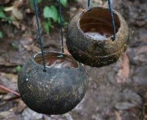

Swansrai merupakan minuman khas papua khususnya dari wilayah biak. Supiori dan Numfor yang memiliki rasa kuat, sedikit pahit,dan kandungan alkohol hingga 30%. Minuman sejenis ii juga terdapat di beberapa wilayah papua dengan nama yang berbeda.
Minuman ini terbuat dari hasil fermemtasi air ke;apa pada pohong yang sudah sangat tua lalu diambil airnya. lalu dihidangkan dengan batok kelapa.